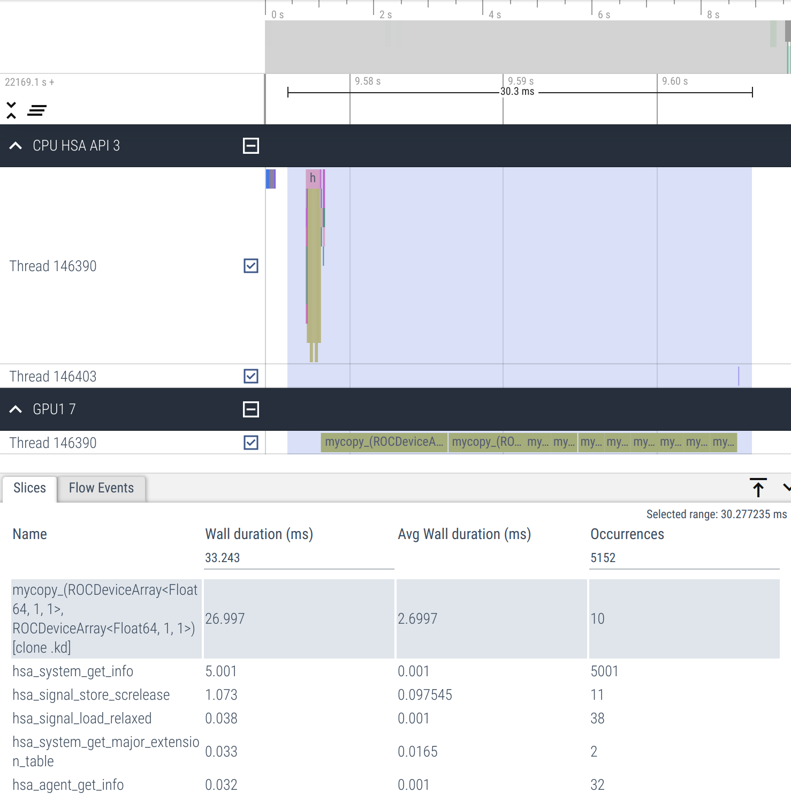

rocprof
rocprof allows profiling both HSA & HIP API calls.
Let's profile simple copying kernel saved in profile.jl file:
using AMDGPU
function mycopy!(dst, src)
i = workitemIdx().x + (workgroupIdx().x - 1) * workgroupDim().x
if i ≤ length(dst)
@inbounds dst[i] = src[i]
end
return
end
function main(N)
src = ROCArray{Float64}(undef, N)
dst = ROCArray{Float64}(undef, N)
groupsize = 256 # nthreads
gridsize = cld(N, groupsize) # nblocks
for i in 1:10
@roc groupsize=groupsize gridsize=gridsize mycopy!(dst, src)
AMDGPU.synchronize()
end
AMDGPU.unsafe_free!(dst)
AMDGPU.unsafe_free!(src)
AMDGPU.synchronize()
return
end
main(2^24)ENABLE_JITPROFILING=1 rocprof --hip-trace --hsa-trace julia ./profile.jlThis will produce results.json (among other files) which can be visualized using Perfetto UI.
| Zoomed out | Zoomed in |
|---|---|
Here we can clearly see that host synchronization after each kernel dispatch causes poor device occupancy (empty spaces between kernel dispatches).
We can fix this by moving synchronization outside the loop so that it happens only once.
...
for i in 1:10
@roc groupsize=groupsize gridsize=gridsize mycopy!(dst, src)
end
AMDGPU.synchronize()
...Running profiling again and visualizing results we now see that kernel launches are adjacent to each other and that the average wall duaration is lower.
| Zoomed out | Zoomed in |
|---|---|
|  |